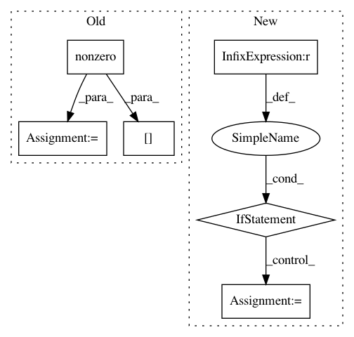

ae74b5ea18fac7e272c9f25b5d9f2775956aa943,distributed/protocol/tests/test_cupy.py,,test_serialize_cupy_sparse,#Any#Any#Any#,82
Before Change
a_host = numpy.array([[0, 1, 0], [2, 0, 3], [0, 4, 0]], dtype=dtype)
a = cupy.asarray(a_host)
anz = a.nonzero()
acoo = cupy_sparse.coo_matrix((a[anz], anz))
asp = sparse_type(acoo)
header, frames = serialize(asp, serializers=[serializer])
asp2 = deserialize(header, frames)
After Change
a_host = numpy.array([[0, 1, 0], [2, 0, 3], [0, 4, 0]], dtype=dtype)
asp_host = scipy_sparse_type(a_host)
if sparse_name == "dia_matrix":
// CuPy `dia_matrix` cannot be created from SciPy one
// xref: https://github.com/cupy/cupy/issues/3158
asp_dev = cupy_sparse_type(
(asp_host.data, asp_host.offsets),
shape=asp_host.shape,
dtype=asp_host.dtype,
)
else:
asp_dev = cupy_sparse_type(asp_host)
header, frames = serialize(asp_dev, serializers=[serializer])
a2sp_dev = deserialize(header, frames)
a2sp_host = a2sp_dev.get()
In pattern: SUPERPATTERN
Frequency: 4
Non-data size: 6
Instances
Project Name: dask/distributed
Commit Name: ae74b5ea18fac7e272c9f25b5d9f2775956aa943
Time: 2020-03-05
Author: jakirkham@gmail.com
File Name: distributed/protocol/tests/test_cupy.py
Class Name:
Method Name: test_serialize_cupy_sparse
Project Name: HazyResearch/fonduer
Commit Name: 1d6771befb95f4ae94f308899633294a003dcfd6
Time: 2020-07-24
Author: hiromu.hota@hal.hitachi.com
File Name: src/fonduer/utils/data_model_utils/structural.py
Class Name:
Method Name: common_ancestor
Project Name: pymc-devs/pymc3
Commit Name: 369d08e119950f356bee2408f6880f7bad1a60d4
Time: 2017-09-17
Author: junpeng.lao@unifr.ch
File Name: pymc3/distributions/multivariate.py
Class Name: Multinomial
Method Name: __init__
Project Name: HazyResearch/fonduer
Commit Name: 1d6771befb95f4ae94f308899633294a003dcfd6
Time: 2020-07-24
Author: hiromu.hota@hal.hitachi.com
File Name: src/fonduer/utils/data_model_utils/structural.py
Class Name:
Method Name: lowest_common_ancestor_depth